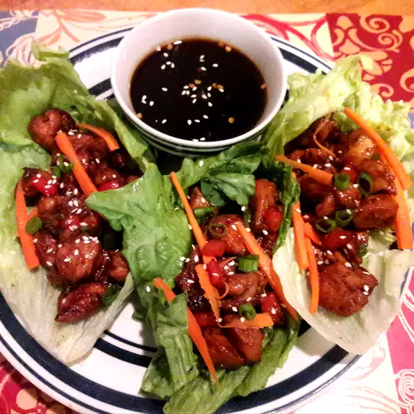

Chicken Lettuce Wraps with Peanut Sauce

Description
Lettuce wrap this up and stuff our mouths… I
bet ya you will not feel even an itsy-bitsy,
teeny-weeny, bit guilty… even when you are going
for that fifth one.
You don’t have to duck under
your desk or table to gobble, or get up in the middle
of the night treading your way to the refrigerator. These
chicken lettuce wraps are so low carb and weight watcher
friendly that I feel like I am losing weight just looking
at them.
Ingredients
- 1 pound ground chicken
- 1 Tbsp vegetable oil
- 1 yellow onion, finely chopped
- 4 cloves garlic, minced
- 1 Tbsp chopped ginger
- 1 Tbsp sesame oil
- 1 (3.5-ounce) package shiitake mushrooms
- 1 julienne cut carrot
- 1/4 cup hoisin sauce
- 1 Tbsp chili garlic sauce
- 2 Tbsp chopped cilantro
- 4 green onions
- 1 head boston lettuce
Peanut Sauce
- 3 Tbsp crunchy peanut butter
- 2 tsp brown sugar
- 1 Tbsp soy sauce
- 1 Tbsp freshly squeezed lemon juice
- 1 tsp chili garlic sauce
- 1 tsp freshly grated ginger
Instructions
- Whisk together all ingredients for peanut sauce.
Whisk in a little water to reach desired consistency.
- Chop Vegetables.
- Heat vegetable and sesame oil in large skillet or wok over medium-high heat. Add
onions, sauté until translucent. Add chicken, break up and sauté 5 minutes. Add
mushrooms, carrots, ginger and garlic, sauté an additional 5 minutes. Stir in chili
garlic and hoisin sauces, sauté until chicken is fully cooked.
- Scoop generous amounts of meat mixture into lettuce leaf boats, drizzle with peanut sauce.